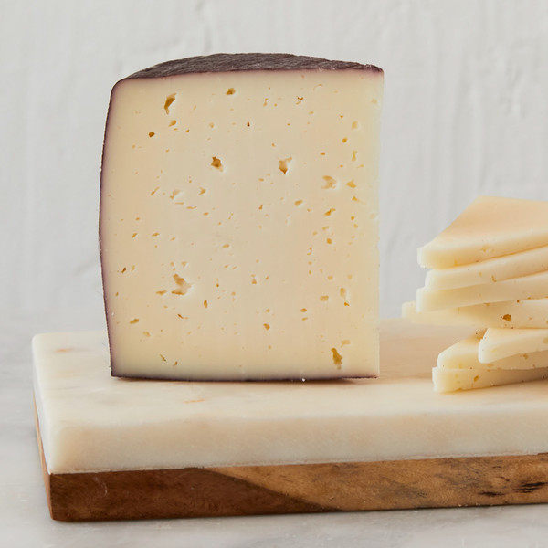

Flavored#
Cranberry Wensleydale (Somerdale)#

Origin: England
Milk: Cow
Purchase location: Whole Foods
Purchase date: 05/02/22
Julie’s comments: Thick waxy purple rind, pale purple crumbly interior with small dried cranberries. Dessert cheese - sweet but not overly so (not syrupy). Crumbles in mouth, creamy with texture from cranberry chunks. Mild, yogurty flavor - many Thanksgiving vibes. Tasty when mood right. 3.69/5
Andrew’s comments: Tastes like a relatively unsweet cheesecake, texture as well. Cranberry is nice, not too strong. Cheese itself is Gouda-y or Cheddary, nothing too special. Dessert or cheese/fruit plate cheese, not ideal for mid dinner snacking. 2.9/5
Double Gloucester, Chive & Onion (Unknown)#

Origin: England
Milk: Cow
Purchase location: Ingles
Purchase date: 05/08/21
Julie’s comments: Waxy, gummy, strong chives, semi soft, creamy. Not my favorite, but would try a non-flavored variety. 1.0/5
Andrew’s comments: This reminded me of the cheese between crackers in those snacks. Felt overprocessed and a bit weird, but honestly sort of tasty? 2.1/5
Drunken Goat (Mitica)#
{kind=link}
Origin: Spain
Milk: Goat
Purchase location: Murray’s Cheese
Purchase date: 01/14/22
Julie’s comments: Wine flavor & smell up front with the purple rind. Creamy, very smooth firm center - nutty and earthy, not salty, quite mild. I was expecting a sharper cheese, but this is creamier with a teeeeny funk at the end. Sadly a bit underwhelming without a glass of wine to accompany. 2.51/5
Andrew’s comments: Cheese is creamy, milky, Nice but not the most exciting. Medium crumbly/chewy texture. The wine rine is tasty but very subtle, I wish it was more forward. 2.4/5
Thanks to Tim & Abigail Necarsulmer for this cheese!
Merlot Bellavitano (Sartori)#
{kind=link}
Origin: Wisconsin
Milk: Cow
Purchase location: Unknown
Purchase date: 01/01/22
Julie’s comments: Hard/firm pale cheese with deep purple rind. Rind tastes like wine! Sharp aged cheese that is excellent for snacking. Great with wine, chocolate, most things. 4.11/5
Andrew’s comments: Semi hard, semi crumbly texture. Nutty flavor, somewhat sweet, with salty wine rind. Very tasty alone or with chips, excellent snack cheese. Super tasty with semisweet chololate chip, per Sartori suggestion. 4.1/5
Sottocenere al Tartufo (Mitica)#

Origin: Spain
Milk: Cow
Purchase location: Whole Foods
Purchase date: 03/26/22
Julie’s comments: Pale white cheese with dusty, 2mm thick purple-black rind. Cheese is creamy, buttery, garlicky - very truffle-like. Sweet undernotes, but mostly strong truffle flavor overpowers. Rind is gritty, but I don’t hate it. Very snackable, but rich so I eat/want less. 3.01/5
Andrew’s comments: Very truffly & garlicky, tastes more like an hors d’oeuvres than just cheese. The underlying cheese is creamy though unremarkable, but truffle flavor dominates. Snackable on its own, very nice with naan, probably other bread. 3.3/5
Ubriacone (Mitica)#
{kind=link}
Origin: Italy
Milk: Cow
Purchase location: Whole Foods
Purchase date: 04/06/22
Julie’s comments: Pale off-white firm cheese with a dark purple rind that makes drilled holes into center. Aged, nutty, slightly sharp, slightly caramely? Like cheddar + goat (subtle tang). Rind tastes like wine! Quite tasty. Dangerously snackable. 4.08/5
Andrew’s comments: Center is very creamy, semi sharp, semi nutty. Fairly soft, semi gummy texture. Outer rind more firm, stronger nutty flavors and a hint of sour flavor. Maybe siney subtly? I like outer part better, inner a bit rich for me. 3.8/5